Основы информационной безопасности - Бекауов А.Т
Российский университет дружбы народов, Москва, Россия
Цель данной лабораторной работы - получение практических навыков работы в консоли с атрибутами файлов для групп пользователей.
Учётная запись guest уже была создана во 2-ой лабораторной работе, потому создаю пользователя guest2, и задаю ему пароль
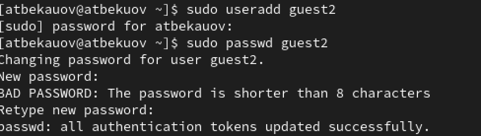
Далее добавляю пользователя guest2 в группу guest.
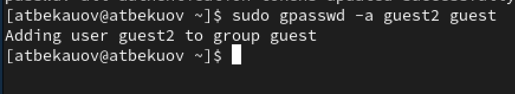
Затем в терминальном окне захожу в пользователя guest и сразу проверяю в какой директории нахожусь с помощью команды pwd. Нахожусь в домашней директории пользователя guest
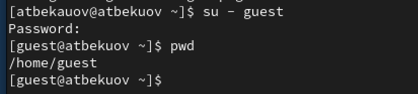
Открываю новое окно терминала и проделываю всё то же самое для пользователя guest2. Каталог соответственно - домашняя папка guest2
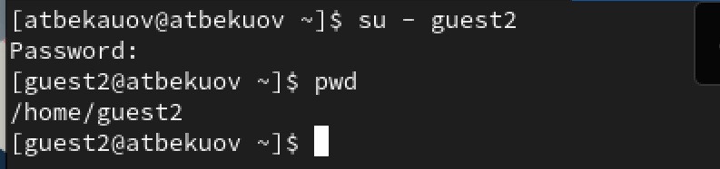
За пользователя guest проверяю имя пользователя и группы, к которым он принадлежит. Вижу, что имя пользователя - guest, принадлежит он к единственной группе - guest(1001).
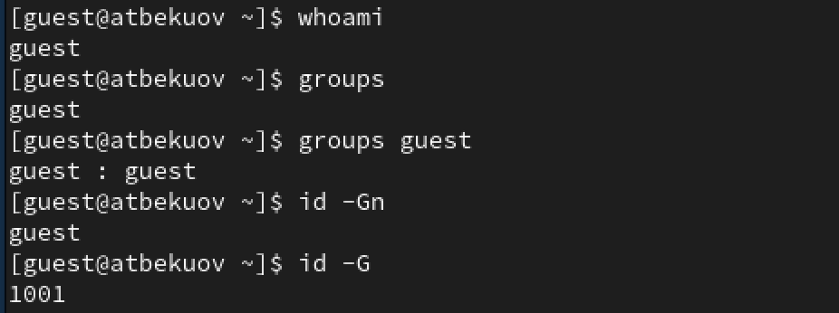
Проделываю всё то же за пользователя guest2. Имя - guest2; группы - guest(1001), guest2(1002).
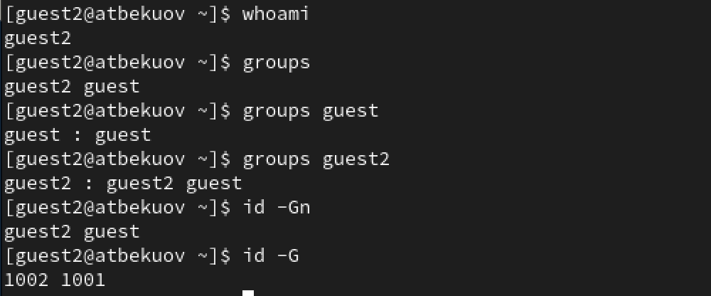
С помощью команды cat /etc/groups проверяю, что написано в /etc/groups. Вижу, что в группе guest(1001) присутствует пользователь guest2 (помимо естественно guest).
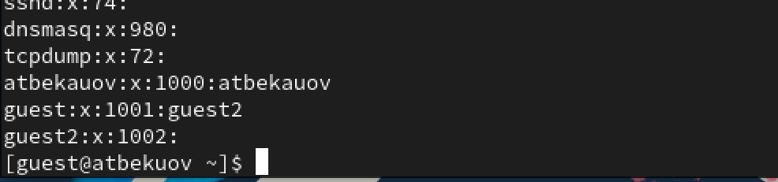
От имени пользователя guest2 выполню регистрацию пользователя guest 2 в группе group (командой newgrp guest).
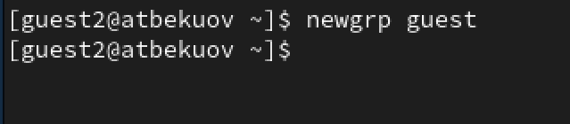
Далее от имени guest, предоставляю группе все права на директорию /home/guest, а затем отбираю все права (у всех) на директорию dir1. Проверяю с помощью команды ls.
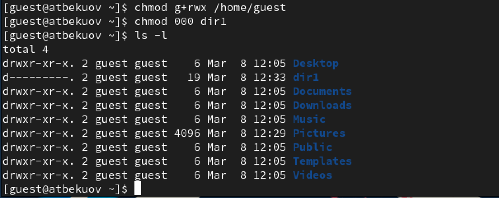
Далее заполню таблицу 1, о влиянии атрибутов на возможность пользователей группы взамодействовать с файлами и директориями.
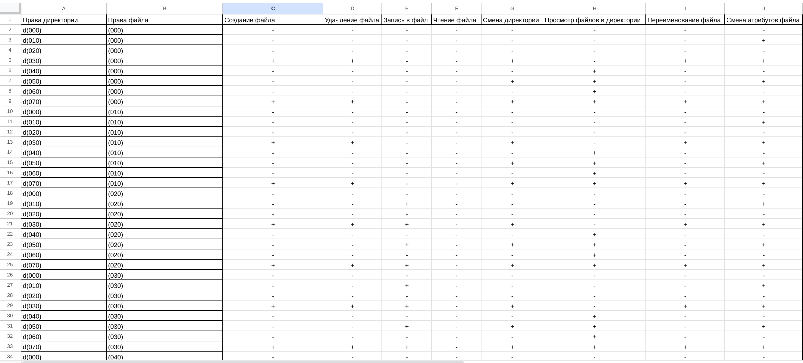
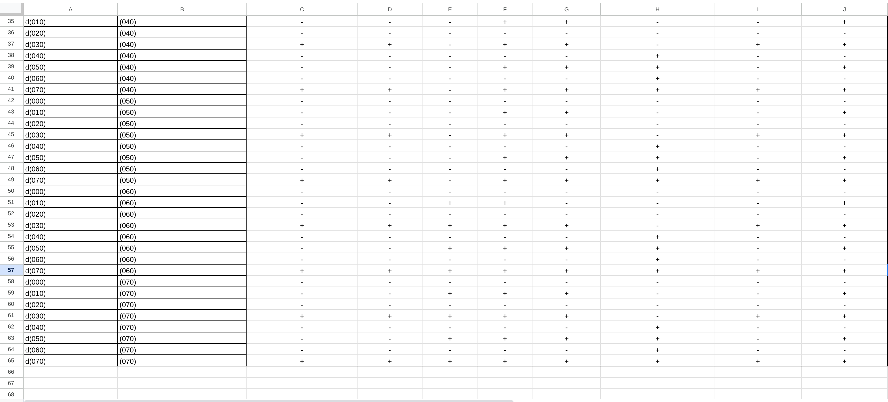
Затем заполню таблицу 2 о минимальных правах, необходимых для совершения операций.
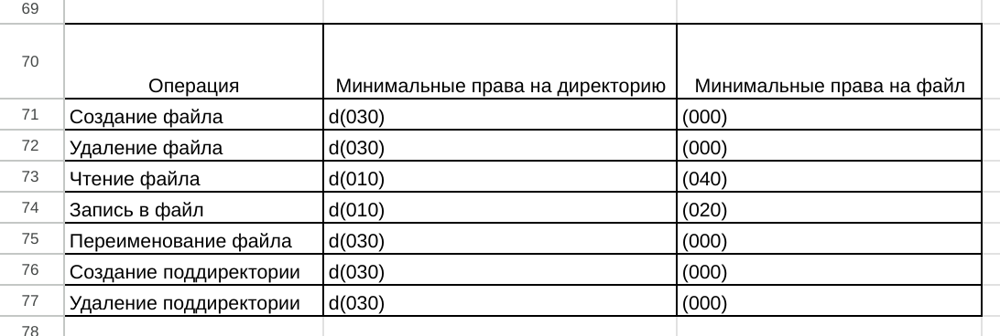
В ходе данной лаботраторной работы я получил практические навыки работы в консоли с атрибутами файлов для групп пользователей